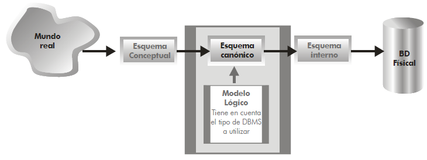
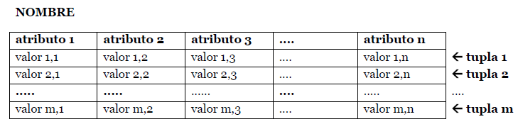
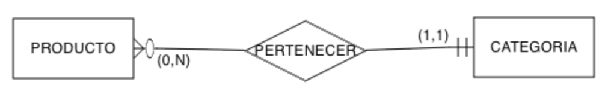
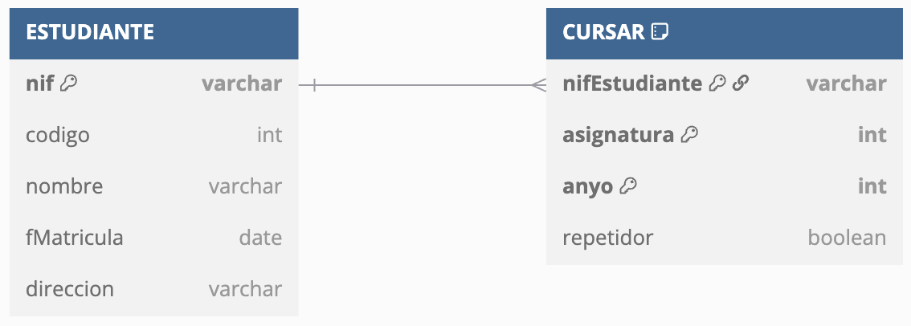
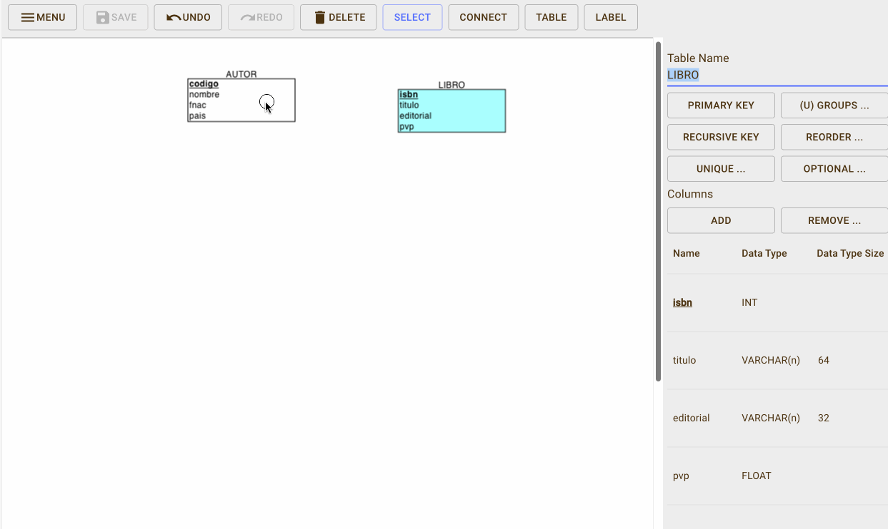
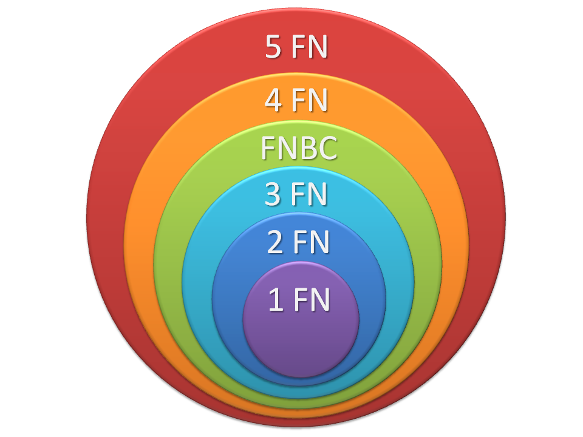
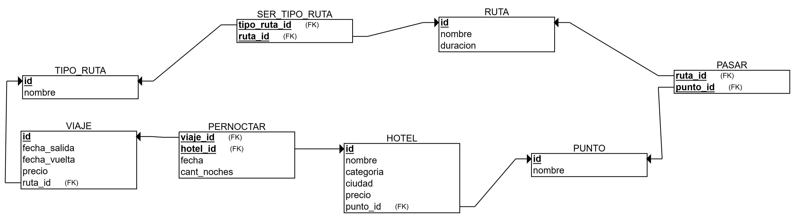

Diseño Lógico: Modelo Relacional
Propuesta didáctica
En esta UT vamos a continuar trabajando el RA6: Diseña modelos relacionales normalizados interpretando diagramas entidad/relación.
Criterios de evaluación
- CE6a: Se han utilizado herramientas gráficas para representar el diseño lógico.
- CE6b: Se han identificado las tablas del diseño lógico.
- CE6c: Se han identificado los campos que forman parte de las tablas del diseño lógico.
- CE6d: Se han analizado las relaciones entre las tablas del diseño lógico.
- CE6e: Se han identificado los campos clave.
- CE6f: Se han aplicado reglas de integridad.
- CE6g: Se han aplicado reglas de normalización.
Contenidos
Bases de datos relacionales:
- Modelo de datos.
- Terminología del modelo relacional.
- Tipos de datos.
- Claves primarias.
- Restricciones de validación.
- El valor NULL.
- Claves ajenas.
Interpretación de Diagramas Entidad/Relación:
- Elementos del modelo relacional.
- Restricciones semánticas del modelo relacional.
- Normalización de modelos relacionales.
Cuestionario inicial
- ¿Qué diferencia el modelo conceptual del lógico?
- ¿Cuál es el elemento principal del modelo relacional?
- ¿Podemos tener dos atributos con el mismo nombre?
- Si una tabla tiene 3 columnas y 5 filas, ¿Cuál es su cardinalidad y grado?
- ¿Podemos tener una tabla sin columnas?
- ¿Y una tabla sin filas?
- ¿Qué función tiene la clave primaria?
- ¿Qué es una clave alternativa?
- ¿Todas las tablas tienen más de una clave candidata?
- ¿En qué consiste la integridad referencial?
- ¿El valor de una clave ajena siempre debe tener valor?
- ¿Qué es una dependencia funcional?
- ¿Y una dependencia funcional completa?
- ¿En qué consiste la 1FN? ¿Y la 2FN? ¿Y la 3FN?
- ¿Qué es la denormalización y cuál es su objetivo?
Programación de Aula (9h)
Esta unidad es la tercera, con lo que se imparte en la primera evaluación, durante la segunda quincena de octubre, con una duración estimada de 9 sesiones lectivas:
| Sesión | Contenidos | Actividades | Criterios trabajados |
|---|---|---|---|
| 1 | Modelo Relacional | AC301 | CE6b, CE6c |
| 2 | Elementos | ||
| 3 | Restricciones | AC303 | CE6f |
| 4 | Notación | AC305 | CE6a, CE6e, CE6f |
| 5 | Interpretando modelos | AC309 | CE6d |
| 6 | Diccionario de datos | AC311 | CE6c, CE6d |
| 7 | Dependencias funcionales | AC313 | CE6g |
| 8 | Formas normales | AC314 | CE6g |
| 9 | Desnormalización | AC315 | CE6g |
El modelo relacional
En la unidad anterior estudiamos que un modelo lógico representa de forma conceptual la estructura de una base de datos, pero dependiendo del SGBD a utilizar.

Modelo lógico
Si nuestra elección es un SGBD relacional, el modelo por excelencia es el modelo relacional. Creado por Codd a finales de los años 60, aunque los primeros SGBD relacionales no aparecieron hasta los 80. Una base de datos modelada mediante el modelo relacional se conoce como una base de datos relacional.
Supuso una revolución en el diseño lógico de las base de datos, dando lugar a la segunda generación de SGBD.
Es el modelo lógico más extendido, y por ende, el mercado de SGBD está copado de soluciones relacionales como Oracle, PostgreSQL, MySQL, SQL Server, etc...
Los objetivos del modelo relacional son:
- Independencia física
- La forma de almacenar los datos no debe influir en su manipulación lógica
- Independencia lógica
- Las aplicaciones que usan el SGBD no deben sufrir una modificación cuando se modifique una base de datos.
- Flexibilidad
- Diferentes vistas para diferentes usuarios
- Uniformidad
- Sencillez
Elementos
El elemento principal es la relación, que consiste en una tabla que contiene filas y columnas. Una base de datos relacional consiste en un conjunto de tablas relacionadas donde cada tabla tiene un nombre único.
Las relaciones se conocen como tablas relacionales o más comúnmente como tablas.
Cada columna (también llamado campo o atributo de la relación) almacena información sobre una propiedad determinada de la tabla, como puede ser el nombre, DNI, apellidos o la edad.
Cada fila posee una ocurrencia o ejemplar de la instancia o relación representada por la tabla (a las filas se las llama también tuplas o registros).

Elementos de una tabla
Grado y Cardinalidad
El grado de una relación indica el número de columnas.
La cardinalidad indica el número de filas.
Así pues, un ejemplo de una relación CLIENTE de grado 5 (dni, nombre, direccion, fecha y genero) con 3 tuplas sería:
| dni | nombre | dirección | fecha | genero |
|---|---|---|---|---|
| 12345678A | Pedro Casas | Avenida de la libertad, 23 | 21/03/24 | M |
| 48123456B | Mireia Vidal | Porta de la Morera, 6 | 22/03/24 | F |
| 34123456C | Laura Meca | Plaça de Baix, s/n | 23/03/24 | F |
Como podemos observar, en la cabecera están los nombres de las columnas, y cada fila supone una nueva ocurrencia. Podemos referirnos al campo de una tabla mediante la notación TABLA.campo, por ejemplo, CLIENTE.nombre referencia el campo nombre de la tabla CLIENTE.
En una misma tabla, no podemos repetir el nombre de las columnas, aunque sí que lo podemos repetir en tablas diferentes. Por ejemplo, CLIENTE.dni y PROVEEDOR.dni serían campos de tablas diferentes con el mismo nombre.
Una restricción del modelo relacional es que dentro de una tabla no puede haber dos tuplas iguales, ya que implicaría el mismo dato dos veces. Además, todas las tuplas deben tener el mismo número de campos, aunque alguno esté vacío (se permiten campos con valores nulos).
El orden no importa
El orden de las tuplas no importa, ni tampoco el orden de los atributos.
Dicho esto, esta sería otra representación de la misma tabla:
| dni | dirección | genero | fecha | nombre |
|---|---|---|---|---|
| 34123456C | Plaça de Baix, s/n | F | 23/03/24 | Laura Meca |
| 48123456B | Porta de la Morera, 6 | F | 22/03/24 | Mireia Vidal |
| 12345678A | Avenida de la libertad, 23 | M | 21/03/24 | Pedro Casas |
Dominio
El dominio de un atributo indica el tipo de valores para un determinado campo. Dicho de otro modo, cada atributo sólo puede tomar un valor en el dominio en el que está inscrito.
Si nos basamos en el ejemplo anterior, tendríamos que los dominios serían:
dni: 8 dígitos y una letra.nombre: cadena de hasta 32 caracteres.dirección: cadena de hasta 64 caracteres.fecha: fecha compuesta dedd/mm/yy.genero: caracteresM,Fo?
Como cada atributo sólo puede tomar un valor para una misma tupla (los valores de los campos son atómicos), no podríamos poner dos DNIs o dos fechas a un mismo cliente.
A muy alto nivel, los tipos de datos básicos para los dominios son:
- Texto: cadena de caracteres, letras, símbolos o números con los que no se realizan operaciones (por ejemplo, un código postal).
- Numérico: números sobre los cuales se pueden realizar operaciones matemáticas.
- Fecha/hora: fechas, horas, o ambas.
- Booleano (V/F - Sí/No): datos con dos posibles valores.
- Autonumérico: secuencia (1,2,3,...) que el SGBD incrementa de forma automática cuando se añade un nuevo registro.
Tipos de dominio
Cuando estudiemos el modelo físico haremos más hincapié en todos los tipos de dominio existente. De momento, lo más importante es tener claro que todos los valores de un determinado campo en una tabla comparten el mismo dominio.
Claves
Cada tabla tiene una columna (o en algunos casos un conjunto de columnas) que sirven como clave primaria (PK / primary key). Su propósito es distinguir a una tupla de otra dentro de la tabla.
Cada tabla debe tener una clave primaria, la cual es una columna (o conjunto de columnas) cuyo valor es único para cada fila.
Volvamos al ejemplo anterior sobre la tabla CLIENTE:
| dni | nombre | dirección | fecha | genero |
|---|---|---|---|---|
| 12345678A | Pedro Casas | Avenida de la libertad, 23 | 21/03/24 | M |
| 48123456B | Mireia Vidal | Porta de la Morera, 6 | 22/03/24 | F |
| 34123456C | Laura Meca | Plaça de Baix, s/n | 23/03/24 | F |
El campo dni funciona como clave primaria de la tabla, ya que no hay dos clientes con el mismo DNI. Pero ¿y el campo nombre? Aunque en la tabla no tengamos ahora mismo dos clientes con el mismo nombre, conceptualmente sabemos que se puede dar el caso, y por lo tanto, no sería una elección correcta, ya que el nombre de un cliente no lo identifica de forma univoca.
Clave subrogada
Cuando en una tabla no tengamos una columna que identifique claramente a una tabla, podemos crear una nueva columna numérica, normalmente denominada id, que tomas valores secuenciales y autoincrementables, de manera que actúa como una clave sustituta independiente de los valores de negocio, que realmente no tiene un significado por sí misma.
Si añadimos una clave subrogada a la tabla CLIENTE tendríamos:
| id | dni | nombre | dirección | fecha | genero |
|---|---|---|---|---|---|
| 1 | 12345678A | Pedro Casas | Avenida de la libertad, 23 | 21/03/24 | M |
| 2 | 48123456B | Mireia Vidal | Porta de la Morera, 6 | 22/03/24 | F |
| 3 | 34123456C | Laura Meca | Plaça de Baix, s/n | 23/03/24 | F |
Claves candidatas
Si una tabla tiene más de un campo (o un conjunto de ellos) que pueden identificar unívocamente a cada tupla de la tabla, se dice que todas las claves posibles son claves candidatas.
De entre las claves candidatas, elegiremos una como la clave primaria y el resto serán claves alternativas. Así pues, una clave alternativa es una clave candidata que no es primaria.
Por ejemplo, si pensamos en la tabla ESTUDIANTE podemos definir los siguientes campos: nif, codigo, nombre, fMatricula, direccion. Las claves candidatas serían ESTUDIANTE.codigo y ESTUDIANTE.nif, ya que permiten identificar de forma unívoca a cada estudiante. Si nos decantamos por ESTUDIANTE.codigo como su clave primaria, entonces ESTUDIANTE.nif sería una clave alternativa.
| nif | codigo | nombre | fMatricula | direccion |
|---|---|---|---|---|
| 12345678A | 1 | Pedro Casas | 1/9/24 | Avenida de la libertad, 23 |
| 48123456B | 2 | Mireia Vidal | 1/9/24 | Porta de la Morera, 6 |
| 34123456C | 3 | Laura Meca | 1/9/24 | Plaça de Baix, s/n |
Claves ajenas
Finalmente, tenemos las claves ajenas (FK / foreign key), los cuales son campos cuyos valores referencian a valores de otra tabla.
Dentro del modelo relacional, el hecho de relacionar los datos de una tabla con otra es crucial, y se realiza mediante las claves ajenas. Así pues, la clave ajena de una tabla referencia, normalmente, al valor de la clave primaria de otra tabla. Por ello, los dominios de la clave ajena y de la clave primaria referenciada deben ser iguales (un campo numérico no puede referenciar a un campo de texto).
Comencemos con el mismo ejemplo que vimos con las relaciones 1:N del modelo conceptual, donde teníamos que todo producto tiene una categoría, pero de una categoría, tenemos muchos productos, el cual representamos así:

Relación 1:N
Si lo representamos mediante tablas, podríamos tener la siguiente estructura:
CATEGORIA
| codigo | nombre |
|---|---|
| 1 | Consola |
| 2 | TIC |
| 3 | Cocina |
| 4 | Bricolaje |
- PRODUCTO |
| codigo | nombre | codCategoria* |
|---|---|---|
| 1 | PS5 | 1 |
| 2 | Nevera | 3 |
| 3 | Teclado | 2 |
| 4 | XBOX | 1 |
| 5 | Ratón | 2 |
| 6 | Volante | NULL |
| - Representación de las ocurrencias |

Ocurrencias 1:N - Representación relacional

Representación Producto-Categoría
Puedes observar como hemos subrayado las claves primaria de cada tabla. ¿Qué atributo tiene la función de clave ajena? En este ejemplo, la columna PRODUCTO.codCategoria es una clave ajena que apunta a CATEGORIA.codigo (fíjate que en este caso, al atributo que es clave ajena le hemos puesto un asterisco * tras su nombre). Si revisamos los valores, podemos comprobar como podemos tener valores repetidos y valores nulos, facilitando que de una categoría tengamos varios productos (categorías de los productos 1 y 4), que de una categoría no tengamos productos (la categoría 4 no está asociada a ningún producto) y, aunque el modelo conceptual no representaba dicha cardinalidad, que tengamos productos sin categoría (como el producto 6).
Cuando tenemos dos tablas relacionadas mediante una clave ajena, mediante operaciones relacionales que veremos en la Unidad 6, podremos crear una nueva relación con el resultado de unir una clave ajena con los datos a los que referencia.
Así pues, al unir ambas tablas, obtendríamos como resultado:
| PRODUCTO.codigo | PRODUCTO.nombre | PRODUCTO.codCategoria | CATEGORIA.nombre |
|---|---|---|---|
| 1 | PS5 | 1 | Consola |
| 2 | Nevera | 3 | Cocina |
| 3 | Teclado | 2 | TIC |
| 4 | XBOX | 1 | Consola |
| 5 | Ratón | 2 | TIC |
| 6 | Volante | NULL |
NULL |
Veamos otro ejemplo, donde tenemos dos tablas, una para estudiantes (igual que el ejemplo de las claves candidatas) y otra para almacenar qué cursos realizan los estudiantes, similares a las siguientes:
ESTUDIANTE
| nif | codigo | nombre | fMatricula | direccion |
|---|---|---|---|---|
| 12345678A | 1 | Pedro Casas | 1/9/24 | Avenida de la libertad, 23 |
| 48123456B | 2 | Mireia Vidal | 1/9/24 | Porta de la Morera, 6 |
| 34123456C | 3 | Laura Meca | 1/9/24 | Plaça de Baix, s/n |
- CURSAR |
nifEstudiante* |
asignatura | anyo | repetidor |
|---|---|---|---|
| 12345678A | 1 | 2024 | true |
| 48123456B | 1 | 2024 | false |
| 12345678A | 2 | 2023 | false |
El campo CURSAR.nifEstudiante es una clave ajena de la relación CURSAR y enlaza con la relación ESTUDIANTE con el campo ESTUDIANTE.nif.
Visualmente, lo podemos representar mediante el siguiente gráfico:

Clave ajena entre ESTUDIANTE y CURSAR
Conviene aclarar que un campo puede ser clave primaria y clave ajena a la vez. Además, una tabla puede tener más de una clave ajena o no tener ninguna. Además, en el caso de las relaciones reflexivas, la clave ajena de la relación enlazará con la clave primaria de sí misma.
Borrado y actualización
Cuanto trabajamos con varias tablas relacionadas mediante claves ajenas y claves primarias, debemos definir las reglas y modificar la clave primaria a la que referencian.
Al actualizar/borrar un registro que contiene una clave ajena, se puede:
- Rechazar: no se permite el borrado/modificación
- Propagar: se borra/modifica el registro, y las tuplas que lo referencian
- Anular: se borra/modifica el registro y las tuplas que lo referencian ponen a nulo la clave ajena.
Autoevaluación
Si volvemos a la relación entre ESTUDIANTE y CURSAR, ¿qué sucede cuando eliminamos el estudiante 12345678A?
ESTUDIANTE
| nif | codigo | nombre | fMatricula | direccion |
|---|---|---|---|---|
| 12345678A | 1 | Pedro Casas | 1/9/24 | Avenida de la libertad, 23 |
| 48123456B | 2 | Mireia Vidal | 1/9/24 | Porta de la Morera, 6 |
- CURSAR |
nifEstudiante* |
asignatura | anyo | repetidor |
|---|---|---|---|
| 12345678A | 1 | 2024 | true |
| 48123456B | 1 | 2024 | false |
| 12345678A | 2 | 2023 | false |
Profundizaremos en las operaciones entre claves ajenas y primarias cuando trabajemos las operaciones DML sobre el modelo físico en la Unidad 5.- Modelo Físico - SQL - Instrucciones DDL y DML.
Restricciones semánticas
A la hora de definir las propiedades de una tabla y sus columnas podemos emplear las siguientes restricciones:
- clave primaria: los atributos marcados como clave primaria no puedan repetir valores.
- unicidad: impide que los valores de los atributos marcados de esa forma puedan repetirse, considerándose unívocos. A nivel visual se marcan con
UK. Vamos a considerar que un atributoUKno permite valores repetidos pero sí nulos (dependiendo del SGBD, en algunos casos se permiten y en otros no). - obligatoriedad (
VNN): prohíbe que el atributo marcado de esta forma no tenga ningún valor (valor no nulo). - regla de validación: condición que debe de cumplir un dato concreto para que sea actualizado.
Además, podemos definir diferentes restricciones:
- a nivel de fila, por ejemplo, de relación entre columnas, del tipo la fecha de devolución debe ser posterior a la fecha de préstamo
- a nivel de conjunto de filas, por ejemplo, un cliente no puede hacer más de 20 pedidos en un día
- a nivel de negocio, del tipo, al insertar un pedido, se debe comprobar si la dirección de envío es la misma que la dirección del cliente, y en caso de no serlo, añadir una nueva dirección al cliente.
Nulos
Los valores nulos (NULL) indican contenidos de atributos que no tienen ningún valor, bien porque la información es desconocida o no aplicable. Es decir, más que un valor, es la ausencia de información. Algunos SGBD muestran la palabra clave NULL, mientras que otros muestran el campo en blanco.
Por ejemplo, si en la tabla ESTUDIANTE tenemos un registro con la dirección nula, está indicando que desconocemos la dirección de Mireia Vidal, no que no tenga dirección.
| nif | codigo | nombre | fMatricula | direccion |
|---|---|---|---|---|
| 12345678A | 1 | Pedro Casas | 1/9/24 | Avenida de la libertad, 23 |
| 48123456B | 2 | Mireia Vidal | 1/9/24 | NULL |
| 34123456C | 3 | Laura Meca | 1/9/24 | Plaça de Baix, s/n |
Si el campo es una clave ajena, indica que el registro actual no está relacionado con ninguno.
Las bases de datos relacionales admiten utilizar ese valor en todo tipo de operaciones.
En cuanto a los campos booleano (V/F), define un tercer valor en la lógica, ya que además del valor verdadero o falso, existe el valor para los nulos.
Integridad de entidad
La integridad de entidad define que todas las claves primarias deben tener valor, y, por lo tanto, no admiten valores nulos.
Si volvemos a la tabla ESTUDIANTE, no podemos tener ningún estudiante con el NIF vacío.
Al definir un campo como PK ya estamos declarando que dicho campo no admite valores nulos (ni repetidos por el propio concepto de clave primaria).
Integridad referencial
Si una relación R1 posee una clave ajena que la enlaza con la relación R2, entonces diremos que cumple la restricción de integridad referencial si todo valor de dicha clave ajena de R1 cumple una de las dos condiciones:
- coincide con algún valor de la clave primaria en la relación R2
- toma el valor nulo (
NULL)
Es decir, prohíbe colocar valores en una clave ajena que no estén reflejados en la clave primaria de la tabla que relaciona.
Veamos un ejemplo que no cumple con la integridad referencial. Tengamos los siguientes datos, sabiendo que CURSAR.nifEstudiante es una clave ajena que apunta a ESTUDIANTE.nif:
ESTUDIANTE
| nif | codigo | nombre | fMatricula | direccion |
|---|---|---|---|---|
| 12345678A | 1 | Pedro Casas | 1/9/24 | Avenida de la libertad, 23 |
| 48123456B | 2 | Mireia Vidal | 1/9/24 | Porta de la Morera, 6 |
| 34123456C | 3 | Laura Meca | 1/9/24 | Plaça de Baix, s/n |
- CURSAR |
nifEstudiante* |
asignatura | anyo | repetidor |
|---|---|---|---|
| 12345678A | 1 | 2024 | true |
| 1 | 2024 | false |
|
| 66666666Z | 2 | 2023 | false |
El primer fallo que encontramos es que el campo CURSAR.nifEstudiante contiene nulos. Aunque las claves ajenas permiten valores nulos, al tratarse también de una clave primaria, estaría incumpliendo la integridad de entidad.
El segundo error es que el valor 66666666Z referencia a un estudiante invalido, y este valor sí que viola la integridad referencial, ya que dicho valor no existe en ESTUDIANTE.nif.
Notación
Para representar una tabla en el modelo relación usaremos una notación textual que facilita su comprensión y posterior transformación al modelo físico. A esta representación se le conoce como esquema relacional (o esquema lógico/canónico).
Pondremos el nombre de la tabla en mayúsculas, y a continuación, entre paréntesis, enumeraremos los campos mediante su nombre en minúsculas (y opcionalmente su dominio). Como convención, el primer atributo será aquel que hace la función de clave primaria, el cual además subrayaremos para facilitar la legibilidad, y a aquellos campos que sean claves ajenas les añadiremos un asterisco (*) para indicar su condición.
Tras el listado de campos, enumeraremos las restricciones, con el siguiente orden:
- la clave primaria (
PK), con el atributo o conjunto de atributos que identifican unívocamente a una tupla. - las claves ajenas (
FK) (si las hubiera), indicando el nombre de la columna, una flecha, y la relación a la que referencia. - el resto de restricciones (
UK,VNN, comprobaciones, etc...) (si las hubiera)
Más propiedades
Un campo puede tener opcionalmente las siguientes propiedades:
- Descripción: texto breve que aporta información sobre el contenido o la finalidad del campo.
- Tamaño: tamaño máximo permitido.
- Rango de valores posibles, a modo de enumeración.
- Requerido o
NOT NULL: no permite valores nulos. - Predeterminado (
DEFAULT): valor por defecto para cuando no se inserta ningún valor.
Por ejemplo, un esquema lógico en modelo relacional que relaciona un libro con un autor, y un autor con muchos libros (relación 1:N) podría ser el siguiente:
AUTOR (codigo: autonumérico, nombre: texto, fnac: fecha, nacionalidad: texto)
· PK: (codigo)
LIBRO (isbn: texto, titulo: texto, descripcion: texto, autor*: numérico, editorial: texto, pvp: real)
· PK: (isbn)
· FK: (autor) → AUTOR
Por legibilidad, vamos a omitir los dominios y representar las tablas únicamente con el nombre de los campos, y posteriormente, en el diccionario de datos, definiremos sus tipos. De este modo, quedaría así:
AUTOR (codigo, nombre, fnac, pais)
· PK: (codigo)
LIBRO (isbn, titulo, autor*, editorial, pvp)
· PK: (isbn)
· FK: (autor) → AUTOR
Tenemos que el autor se identifica por un código, el cual es su clave primaria. En cambio, los libros se identifican por su ISBN, y tienen un atributo autor que referencia a la clave primaria de AUTOR (y por tanto, deben tener el mismo dominio). De esta relación, deducimos que el nombre del atributo de la clave ajena no tiene por qué coincidir con el nombre de la clave primaria, pero sí su dominio.
Si analizamos las cardinalidades de las tablas, tenemos:
Card(LIBRO, ESCRIBIR) = (0, 1): Todo libro tiene un atributo autor, y sólo uno, el cual puede estar rellenado o no.Card(AUTOR, ESCRIBIR) = (0, N): Si un libro tiene un atributo autor, y el mismo autor puede aparecer en más de un libro, entonces un autor puede escribir muchos libros (o ninguno, si no aparece en ninguna ocurrencia deLIBRO).
En la próxima unidad estudiaremos el proceso de transformación de un modelo conceptual a uno relacional, y en concreto, cómo se gestionan las claves ajenas para cumplir las cardinalidades y restricciones de las relaciones.
DBML - Database Markup Language
La notación que vamos a emplear en clase es sencilla y cumple su propósito.
Dicho esto, desde principio de 2020, gracias a la empresa https://dbdiagram.io/, se está popularizando DBML como un lenguaje de marcado para representar bases de datos.
Si quieres profundizar en su uso, es recomendable consultar su sintaxis o puedes probar a generar diagramas en https://dbdiagram.io/.
En nuestro caso, por ejemplo, podemos representa las entidades AUTOR y LIBRO del siguiente modo:
Table AUTOR {
codigo entero [primary key]
nombre cadena
fnac fecha
pais cadena
}
Table LIBRO {
isbn cadena [primary key]
titulo cadena
autor entero [ref: > AUTOR.codigo]
editorial cadena
pvp real
}
Obteniendo como resultado el diagrama:

Diagrama AUTOR-LIBRO
Vamos a crear datos ficticios y comprobaremos si el modelo cumple la relación de uno a muchos:
AUTOR
| codigo | nombre | fnac | pais |
|---|---|---|---|
| 1 | Brandon Sanderson | 19/12/75 | USA |
| 2 | Juan Gómez Jurado | 16/12/77 | España |
| 3 | Jöel Dicker | 16/06/85 | Suiza |
- LIBRO |
| isbn | titulo | autor* |
editorial | pvp |
|---|---|---|---|---|
| 9788420476841 | Un animal salvaje | 3 | Alfaguara | 23,90 |
| 9788420414065 | La verdad sobre el caso Harry Quebert | 3 | Alfaguara | 23,90 |
| 9788491221722 | Lazarillo de Tormes | NULL |
Santillana | 14,20 |
| 9788419260444 | Nacidos de la bruma | 1 | Nova | 24,90 |
Así pues, comprobamos que tenemos un autor (el 3 con dos libros), e incluso un libro sin autor, confirmando la relación 1:N conforme queríamos diseñar.
Cardinalidad de las relaciones
Con lo que sabemos hasta ahora, piensa:
- ¿Cómo evitamos que la cardinalidad mínima sea 0 entre LIBRO y AUTOR, es decir, que
Card(LIBRO, ESCRIBIR) = (1,1), de manera que cada libro lo escriba siempre un autor, no permitiendo valores nulos en la clave ajena? - ¿Cómo cambiamos la relación de 1:N a una relación 1:1, para que cada autor solo pudiera escribir un libro?
Representación gráfica
Aunque ya hemos visto que podemos emplear DBDiagrams para generar un diagrama a partir del esquema lógico mediante DBML, también podemos emplear diversas herramientas existentes en el mercado, como ERDPlus o MySQLWorbench (más cercano al modelo físico), que permiten dibujar los elementos.
En nuestro caso, nos vamos a centrar en ERDPlus, principalmente por ser una herramienta online gratuita. Una vez registrados, tenemos la opción de generar un diagrama ER o un esquema relacional. En este caso, nos centraremos en el esquema relacional.
Mediante la barra superior, con el botón TABLE nos aparecerá un diálogo a la derecha donde podremos indicar el nombre de la tabla y añadir y configurar los atributos de la tabla. Tras añadir todos los atributos, debemos configurar su clave primaria mediante el botón PRIMARY KEY del menú lateral:

Tabla AUTOR en ERDPlus
A continuación, repetimos los pasos y añadimos los campos de la tabla LIBRO, pero sin añadir la clave ajena. Para ello, mediante el botón CONNECT de la barra superior, pinchamos en AUTOR y arrastramos a LIBRO, y veremos como añade un nuevo atributo en la tabla LIBRO con la clave primaria de AUTOR, marcando el nuevo atributo con la etiqueta FK. A continuación, para que coincida con nuestro modelo lógico, renombramos el atributo, y lo colocamos tras el titulo:

Clave ajena con ERDPlus
Diccionario de datos
El diccionario de datos de un modelo relacional es un repositorio central que almacena metadatos sobre los elementos de una base de datos.
En un sistema de bases de datos relacional, el diccionario de datos incluye detalles sobre las estructuras de las tablas, las relaciones entre las tablas, las columnas, los índices, las restricciones, los procedimientos almacenados y otros objetos de la base de datos. Es esencialmente un catálogo que describe la estructura lógica y la organización de la base de datos.
Las funciones del diccionario de datos son:
- Documentación: Sirve como referencia para desarrolladores y administradores de bases de datos, ayudándoles a entender la estructura y organización de la base de datos.
- Control de integridad: Ayuda a asegurar que las definiciones de las tablas y relaciones se mantengan coherentes y conformes a las reglas establecidas.
Componentes
- Tablas y columnas: Describe las tablas en la base de datos, los nombres de las columnas, tipos de datos (los diferentes tipos de datos los estudiaremos en detalle en la unidad 5), tamaños y si permiten valores nulos.
- Relaciones y claves: Define las relaciones entre tablas y especifica las claves primarias y ajenas.
- Restricciones: Incluye detalles sobre restricciones como
UNIQUE,CHECK,NOT NULL, yDEFAULT.
Si nos centramos en los modelos físicos, podríamos incluir otros componentes como índices, vistas, procedimientos almacenados y funciones o triggers, así como usuarios y permisos.
Ejemplo
Para este ejemplo, nos vamos a basar en el mismo ejemplo que hemos utilizado en el apartado de Notación, donde un AUTOR escribe muchos LIBRO, pero un LIBRO sólo lo escribe un AUTOR.
Para documentar el diccionario de datos, se utiliza una estructura de tabla con el nombre de la columna, el tipo de datos, las restricciones y una descripción del campo:
- Tabla
AUTOR
| Columna | Tipo de Datos | Restricción | Descripción |
|---|---|---|---|
codigo |
INT auto_increment |
PK | Identificador único del autor. |
nombre |
VARCHAR(64) |
Nombre del autor. | |
fnac |
DATE |
Fecha de nacimiento del autor. | |
pais |
VARCHAR(32) |
País de nacimiento del autor. | |
- Tabla LIBRO |
| Columna | Tipo de Datos | Restricción | Descripción |
|---|---|---|---|
isbn |
INT |
PK | Identificador único del libro. |
titulo |
VARCHAR(64) |
Título del libro. | |
autor |
INT |
FK | Indica el autor del libro, referenciando a AUTOR.codigo. |
editorial |
VARCHAR(32) |
Editorial que publica el libro. | |
pvp |
DECIMAL(10,2) |
Precio de venta al público del libro. |
A continuación, indicamos las relaciones y restricciones de las claves ajenas:
- Clave ajena en
LIBRO:autorreferencia acodigoen la tablaAUTOR, indicando la relación entre un libro y su autor. - Restricción de borrado: rechazar.
- Restricción de modificación: propagar.
Normalización
Un principio del diseño relacional es que "hechos distintos se deben almacenar en objetos distintos".
Para conseguir este objetivo, la normalización es una técnica dentro del diseño de bases de datos relacionales que consiste en la separación de atributos en tablas lo más simples posibles para suprimir dependencias erróneas entre atributos, reducir la redundancia así como optimizar los procesos de inserción, modificación y borrado en la bases de datos, evitando las anomalías previamente comentadas, lo que maximiza la integridad de los datos y su consistencia.
Podemos simplificar el objetivo de la normalización en maximizar la integridad de los datos, reduciendo su redundancia.
Para conseguirlo, se basa en el análisis de dependencias entre atributos mediante un proceso que consiste en identificar y aplicar una serie de reglas a las relaciones obtenidas del esquema relacional.
Supuesto Comerciales
Supongamos los siguientes datos sobre ventas que realizan una serie de comerciales de los cuales tenemos su código y nombre, su estado laboral (con un código y una descripción), la ciudad y la provincia donde realizan las ventas, así como las poblaciones de dichas ciudades y provincias.
| comercialID | comercialNom | estadoID | estadoDesc | ciudad | provincia | ciudadPob | provinciaPob | ventas |
|---|---|---|---|---|---|---|---|---|
| C1 | Carlos Suarez | JC | Jornada Completa | Badajoz | Alicante | 230.000 | 1.800.000 | 33 |
| C1 | Carlos Suarez | JC | Jornada Completa | Denia | Alicante | 42.000 | 1.800.000 | 22 |
| C2 | Manoli Campos | JC | Jornada Completa | Badajoz | Alicante | 230.000 | 1.800.000 | 55 |
| C2 | Manoli Campos | JC | Jornada Completa | Aspe | Alicante | 22.000 | 1.800.000 | 44 |
| C3 | Carlos Suarez | JPM | Jornada Partida Mañanas | Cartagena | Murcia | 218.000 | 1.520.000 | 17 |
| C4 | Sonia Sánchez | JPT | Jornada Partida Tardes | Gandía | Valencia | 73.000 | 2.550.000 | 27 |
| C5 | Marina Vidal | JC | Jornada Completa | Valencia | Valencia | 807.000 | 1.800.000 | 37 |
| C6 | Michael Johnson | JC | Jornada Completa | Valencia | California | 63.000 | 38.940.000 | 47 |
Claramente, tenemos datos redundantes. Si reorganizamos los datos de otra manera podríamos evitar dependencias.
Anomalías
Una anomalía se refiere a una inconsistencia o problema que puede surgir en una base de datos, especialmente cuando no está normalizada. Estas anomalías pueden manifestarse de diversas maneras, afectando la integridad y consistencia de la información almacenada.
Los tipos de anomalías en bases de datos son:
- anomalías de actualización: ocurren cuando se intenta actualizar un registro en múltiples ubicaciones y no todas las copias se actualizan correctamente, generando discrepancias en los datos.
- anomalías de inserción: surgen cuando no se puede insertar un nuevo registro en una tabla sin introducir datos redundantes o violar ciertas restricciones. Por ejemplo, si tenemos una tabla que almacena información de estudiantes y cursos, si no hay una clave principal que identifique de forma única cada registro, se podrían generar anomalías al intentar insertar nueva información.
- anomalías de eliminación: se producen cuando se elimina información importante al intentar eliminar un registro específico, lo que puede llevar a la pérdida de datos. Siguiendo con el ejemplo anterior, si se elimina un registro de estudiante y este registro también contiene información sobre un curso, podría perderse la información del curso si no se toman precauciones.
Para solucionar las anomalías, debemos normalizar las tablas.
Dependencias funcionales
Antes de entrar a conocer los pasos de la normalización, previamente tenemos que definir una serie de conceptos:
- Dependencia funcional (DF): es la relación semántica existente entre atributos de una misma tabla. Decimos que A → B, es decir, que B depende funcionalmente de A (o A determina a B), si y solo si para cada valor de A sólo puede existir un B.
El sentido de la relación no es bidireccional. Que para una valor de A sólo exista un B, no significa que dado B, siempre obtengamos A. Por ejemplo, la dependencia dni → nombre, apellidos es correcta, ya que tanto el nombre de una persona como sus apellidos dependen funcionalmente de su DNI, pero no al revés. ¿Dado un nombre de una persona, podemos saber su DNI?
DF - Supuesto Comerciales
El primer paso es para cada columna, identificar las dependencias que hay entre los atributos.
Por ejemplo, cogemos el nombre del comercial, y detectamos que dependen funcionalmente del identificador del comercial, por lo tanto: comercialID → comercialNom. Pero si nos fijamos bien en los nombres de los comerciales, no podemos decir lo mismo en el sentido contrario, ya que tenemos un nombre repetido en diferentes códigos de comercial (¡qué casualidad!), con lo que no es correcto decir comercialNom → comercialID.
Si hacemos lo mismo con el identificador del estado del comercial, deducimos que depende también del identificador, obteniendo comercialID → estadoID.
Y lo mismo con la descripción del estado. En este caso, se cumplen que tanto el identificador del comercial como el identificador del estado permiten obtener la descripción del estado, obteniendo comercialID → estadoDesc y estadoID → estadoDesc.
Si continuamos con todos los atributos y agrupamos las dependencias funcionales tenemos:
comercialID → comercialNom, estadoID, estadoDescestadoID → estadoDescestadoDesc → estadoIDprovincia → provinciaPobciudad, provincia → ciudadPob, por ejemplo, tenemos dos ciudadesValenciaen provincias diferentescomercialID , ciudad, provincia → ventas
Tal como hemos comentado previamente, cuando agrupamos los atributos, la dependencia comercialID → comercialNom, estadoID, estadoDesc significa que tanto el nombre del comercial, como el código de su estado y el estado dependen del identificador del comercial.
- Dependencia funcional completa (DFC): cuando tenemos que A1, A2, ...AN → B (B tiene una dependencia funcional del conjunto A1, A2, ...AN), pero no de ninguno de sus subconjuntos.
Es decir, B depende de la combinación completa de atributos, y no de un parte de la clave.
DFC - Supuesto Comerciales
Tenemos que las ventas dependen de la combinación comercialID, ciudad, provincia y no de un subconjunto de ellas, es decir, comercialID, ciudad, provincia → ventas.
- Dependencia funcional transitiva (DFT): se dice que hay un DFT entre A y C, si A → B y B → C, siendo B y C columnas no claves. Dicho de otro modo, cuando tenemos columnas no claves que determinan otras columnas no clave.
DFT - Supuesto Comerciales
Tenemos que comercialID → comercialNom, estadoID, estadoDesc y que estadoID → estadoDesc, por lo que tenemos una dependencia transitiva de comercialID a estadoDesc, ya que comercialID → estadoID → estadoDesc.
Formas Normales

Formas normales - Wikipedia
La normalización consiste en una serie de pasos, cada uno de los cuales se corresponde a una forma normal (FN). Conforme se va avanzando en la normalización, las tablas tienen una estructura más limpia y con menor redundancia.
Codd propuso en 1972 tres formas normales, a las que se sumó la forma normal de Boyce-Codd en 1974, y luego se añadieron dos más por parte de Fagin entre 1977 y 1979. En este curso, nos vamos a centrar en las tres primeras, que cubren la mayoría de casos con los que nos vamos a encontrar, ya que se considera que una base de datos que está en 3FN es una base de datos correctamente diseñada
Todas las formas normales se construyen sobre una forma normal previa, de forma que se anidan unas dentro de otras:
- 1FN: Una relación está en primera forma normal si, y sólo si, todos sus dominios contienen valores atómicos. Supone la eliminación de todos los campos multivaluados.
Por lo general, si tenemos una tabla de un modelo relacional, por las propias restricciones semánticas del modelo relacional, no deberíamos tener ningún campo con varios valores, ya que deberían haberse transformado en relaciones 1:N.
1FN - Supuesto Comerciales
Como ninguna columna tiene más de un valor, la tabla ya está en 1FN. - 2FN: una relación está en segunda forma normal si está en 1FN y todas las columnas que no son clave tienen un DFC de la clave primaria.
Para ello, descompondremos la tabla en varias subtablas, y comprobaremos que ningún subconjunto de los atributos no clave determinan campos no principales.
Si todas las claves candidatas de las tablas en 1FN son simples (unitarias), automáticamente las tablas ya están en 2FN. En cambio, si la clave primaria es compuesta, deberemos comprobar que todos los atributos dependen de la clave primaria compuesta y no de un subconjunto de esta.
2FN - Supuesto Comerciales
Si revisamos las dependencia funcionales, hemos de comprobar que todos los atributos no clave dependan de toda la clave primaria. Para ello, necesitamos crear al menos tres tablas:
COMERCIAL (comercialID, comercialNom, estadoID, estadoDesc)
· PK: (codigo)
CIUDAD (ciudad, provincia, ciudadPob, provinciaPob)
· PK: (ciudad)
REGISTRO (comercialID*, ciudad*, provincia*, ventas)
· PK: (comercialID, ciudad, provincia)
Dando como resultado las siguientes tablas con datos:
-
COMERCIALcomercialID comercialNom estadoID estadoDesc C1 Carlos Suarez JC Jornada Completa C2 Manoli Campos JC Jornada Completa C3 Carlos Suarez JPM Jornada Partida Mañanas C4 Sonia Sánchez JPT Jornada Partida Tardes C5 Marina Vidal JC Jornada Completa C6 Michael Johnson JC Jornada Completa - CIUDADciudad provincia ciudadPob provinciaPob Badajoz Alicante 230.000 1.800.000 Denia Alicante 42.000 1.800.000 Aspe Alicante 22.000 1.800.000 Cartagena Murcia 218.000 1.520.000 Gandía Valencia 73.000 2.550.000 Valencia Valencia 807.000 1.800.000 Valencia California 63.000 38.940.000 - REGISTROcomercialID *ciudad *provincia *ventas C1 Badajoz Alicante 33 C1 Denia Alicante 22 C2 Badajoz Alicante 55 C2 Aspe Alicante 44 C3 Cartagena Murcia 17 C4 Gandía Valencia 27 C5 Valencia Valencia 37 C6 Valencia California 47 - 3FN: 2FN + todo atributo que no es clave primaria no tiene una dependencia funcional transitiva de otro atributo no clave, es decir, depende únicamente de la clave primaria de modo no transitivo.
3FN - Supuesto Comerciales
Ahora revisamos que no haya atributos que dependan de forma transitiva de la clave primaria. Tanto COMERCIAL.estadoDesc como CIUDAD.provinciaPob dependen de forma transitiva de un atributo no que es clave en sus tablas (COMERCIAL.estadoID y CIUDAD.provincia, respectivamente). Es decir, tenemos las DFT comercialID → estadoID → estadoDesc y ciudad → provincia → provinciaPob.
Así pues, para deshacer las dependencias funcionales transitivas dividimos las tablas COMERCIAL y CIUDAD en dos nuevas tablas (ESTADOy PROVINCIA):
ESTADO (estadoID, estadoDesc)
· PK: (codigo)
COMERCIAL (comercialID, comercialNom, estadoID*)
· PK: (codigo)
· FK: (estadoID) → ESTADO
PROVINCIA (provincia, provinciaPob)
· PK: (provincia)
CIUDAD (ciudad, provincia*, ciudadPob)
· PK: (ciudad)
· FK: (provincia) → PROVINCIA
REGISTRO (comercialID*, ciudad*, provincia*, ventas)
· PK: (comercialID, ciudad, provincia)
· FK: (comercialID) → COMERCIAL
· FK: (ciudad, provincia) → CIUDAD
Dando como resultado las siguientes tablas con datos:
-
ESTADOestadoID estadoDesc JC Jornada Completa JPM Jornada Partida Mañanas JPT Jornada Partida Tardes - COMERCIALcomercialID comercialNom estadoID *C1 Carlos Suarez JC C2 Manoli Campos JC C3 Carlos Suarez JPM C4 Sonia Sánchez JPT C5 Marina Vidal JC C6 Michael Johnson JC - PROVINCIAprovincia provinciaPob Alicante 1.800.000 Murcia 1.520.000 Valencia 2.550.000 California 38.940.000 - CIUDADciudad provincia *ciudadPob Badajoz Alicante 230.000 Denia Alicante 42.000 Aspe Alicante 22.000 Cartagena Murcia 218.000 Gandía Valencia 73.000 Valencia Valencia 807.000 Valencia California 63.000 - REGISTROcomercialID *ciudad *provincia *ventas C1 Badajoz Alicante 33 C1 Denia Alicante 22 C2 Badajoz Alicante 55 C2 Aspe Alicante 44 C3 Cartagena Murcia 17 C4 Gandía Valencia 27 C5 Valencia Valencia 37 C6 Valencia California 47
El problema de la 3FN es que no maneja relaciones que:
- Tienen varias claves candidatas,
- Esas claves candidatas son compuestas, y
- Las claves candidatas tienen por lo menos un atributo en común.
- FNBC: Es una mejora de la 3FN donde, si tenemos más de una clave candidata y estas son compuestas y comparten algún atributo entonces, ningún atributo, sea clave o no, puede depender de algo que no sea la clave primaria.
Si la clave no es compuesta y no existe más de una clave candidata (sólo tenemos la clave primaria), la FNBC es equivalente a la 3FN.
El objetivo de la FNBC es asegurar que cada dato de una tabla depende únicamente de una clave real y completa, y no de otra cosa.
3FN - Supuesto Comerciales
Como la única tabla con una clave primaria compuesta (REGISTRO) no tiene otras claves candidatas, ya está en FNBC.
En resumen...
En la práctica, cuando todas las tablas están en FNBC, se puede considerar que la base de datos está totalmente normalizada. Una tabla en FNBC ya está desde 1FN hasta 3FN y tiene las siguientes características:
- Tiene una clave primaria.
- No tiene columnas multivaluadas.
- Todas las columnas dependen de una clave pero nada más.
- No contiene ninguna dependencia transitiva.

Proceso de normalización
Paso a paso
Vamos a plasmar el proceso de normalización en un ejemplo resuelto paso a paso.
Tenemos una tabla sobre la cual queremos comprobar si está normalizada. Se basa en los datos de una escuela de diseño, donde tenemos alumnado que cursa diversas asignaturas que imparte un docente, y en la cual puede obtener una calificación de dicho docente.
Se muestra un ejemplo de datos de la tabla de la cual partimos:
| codAlumno | nomAlumno | codAsignatura | nomAsignatura | codProfesor | nomProfesor | nota |
|---|---|---|---|---|---|---|
| 1 | Pedro Casas | A | Diseño I | X | Miguel Ruiz | 9.85 |
| 1 | Pedro Casas | B | Pruebas I | X | Miguel Ruiz | 5.65 |
| 2 | Mireia Vidal | A | Diseño I | X | Miguel Ruiz | 10 |
| 2 | Mireia Vidal | A | Diseño I | X | Miguel Ruiz | 9.85 |
| 3 | Sonia Caparrós | C | Usabilidad | Y | Marina López | 7 |
Vamos a aplicar las diferentes reglas y transformaciones necesarias hasta comprobar la FNBC.
El primer paso es definir las dependencias funcionales, obteniendo:
codAlumno → nomAlumno: El nombre del alumno depende funcionalmente del código.codAsignatura → nomAsignatura: El nombre de la asignatura depende funcionalmente del código.codProfesor → nomProfesor: El nombre del profesor depende funcionalmente del código.(codAlumno, codAsignatura, codProfesor) → nota: La combinación del código del alumno, el código de la asignatura y el código del profesor determina la nota.
Las claves candidatas de la relación serían codAlumno, codAsignatura, codProfesor y (codAlumno, codAsignatura, codProfesor) y los campos no clave serían nomAlumno, nomAsignatura, nomProfesor y nota.
A continuación, comprobamos si cumple las diferentes formas normales:
- ¿Está en 1FN? Comprobamos que la tabla no tiene campos multivaluados y, por lo tanto, la tabla de por sí ya está en primera forma normal.
- ¿Está en 2FN? Está en 1FN y comprobamos las dependencias funcionales completas entre los atributos de la relación, es decir, todos los atributos no clave tienen una DFC de la clave primaria.
Como los atributos nomAlumno, nomAsignatura, nomProfesor tienen no tienen una DFC de la clave (codAlumno, codAsignatura, codProfesor) (ya que la tienen de un subconjunto de la clave, por ejemplo, el nombre del alumno depende funcionalmente de su código), necesitamos descomponer la relación en las siguientes tablas:
ALUMNO (codAlumno, nomAlumno)
· PK: (codAlumno)
ASIGNATURA (codAsignatura, nomAsignatura)
· PK: (codAsignatura)
PROFESOR (codProfesor, nomProfesor)
· PK: (codProfesor)
CALIFICAR (codAlumno*, codAlumno*, codAlumno*, nota)
· PK: (codAlumno, codAsignatura, codProfesor)
· FK: (codAlumno) → ALUMNO
· FK: (codAsignatura) → ASIGNATURA
· FK: (codProfesor) → PROFESOR
- ¿Está en 3FN? Está en 2FN y comprobamos que todos los atributos no clave dependen únicamente de la clave primaria.
En la tabla CALIFICAR no hay dependencias transitivas, ya que nota depende directamente de la clave primaria compuesta (codAlumno, codAsignatura, codProfesor).
- ¿Está en FNBC? Está en 3FN y además, todos los atributos no dependen de otra cosa que la clave primaria.
En la tabla CALIFICAR, (codAlumno, codAsignatura, codProfesor) juntos forman la única clave candidata, por lo tanto, ya está en 8FNBC.
El resultado de normalizar la tabla inicial sería
ALUMNO (codAlumno, nomAlumno) · PK: (codAlumno)
| codAlumno | nomAlumno |
|---|---|
| 1 | Pedro Casas |
| 2 | Mireia Vidal |
| 3 | Sonia Caparrós |
| - `ASIGNATURA (codAsignatura, nomAsignatura) | |
| · PK: (codAsignatura)` |
| codAsignatura | nomAsignatura |
|---|---|
| A | Diseño I |
| B | Pruebas I |
| C | Usabilidad |
| - `PROFESOR (codProfesor, nomProfesor) | |
| · PK: (codProfesor)` |
| codProfesor | nomProfesor |
|---|---|
| X | Miguel Ruiz |
| Y | Marina López |
| - `CALIFICAR (codAlumno, codAlumno, codAlumno*, nota) | |
| · PK: (codAlumno, codAsignatura, codProfesor) | |
| · FK: (codAlumno) → ALUMNO | |
| · FK: (codAsignatura) → ASIGNATURA | |
| · FK: (codProfesor) → PROFESOR` |
codAlumno* |
codAsignatura* |
codProfesor* |
nota |
|---|---|---|---|
| 1 | A | X | 9.85 |
| 1 | B | X | 5.65 |
| 2 | A | X | 10 |
| 3 | C | Y | 7 |
Estas tablas están ahora en FNBC, eliminando redundancias y asegurando que todas las dependencias funcionales se respetan correctamente.
Desnormalización
El concepto de desnormalizar un modelo relacional consiste en transformar una base de datos a una forma normal menor, siempre con el objetivo de mejorar el rendimiento de las operaciones de consulta de datos, a costa de aceptar cierta redundancia de datos
Por ejemplo, podemos unir varias relaciones en una si se usan juntas frecuentemente mediante operaciones join.
Además del rendimiento en las consultas, podemos desnormalizar nuestros modelos para simplificar el esquema o reducir la complejidad de ciertas consultas.
Un caso muy común es unir los datos de dos tablas que tienen una relación 1:1 en una única tabla (siempre que la semántica de las relaciones lo permita).
Referencias
- Herramienta gráfica ERDPlus para la realización de diagramas de modelos relacionales.
-
Materiales sobre el módulo de BD:
-
Model Relacional - Institut Obert de Catalunya
- Modelo Relacional de Jorge Sánchez
- Bases de datos relacionales de Javier Gutiérrez
- Diseño de modelo lógicos normalizados de gestionbasesdatos.readthedocs.io
- Diseño lógico y Normalización de la Universidad de Sevilla
Actividades
- AC301. (RABD.6 // CE6b, CE6c // 3p) Analiza la siguiente tabla
EMPLEADOy enumera todos los errores que encuentres. A continuación, aporta una solución para cada uno de ellos. Finalmente, analiza las claves existentes:
| dni | nombre | genero | direccion | fAlta | casado | nombre | codEmpleado |
|---|---|---|---|---|---|---|---|
| 12345678A | Guillem Vidal | M | C Mayor, 5 | 11/1/24 | N | 1 | |
| 12345679B | Guillem Vidal | M | C Illueca, 26 | 21/1/24 | N | 2 | |
| 12345670C, 12345671D | Juan y María Sánchez | M,F | C Illueca, 26 | 31/1/24 | S,N | Juani | 3,4 |
| 98765431X | Juani Mora | F | 30/2/24 | S | Óscar | X2 | |
| 98765432Z | Domingo Gallardo | M | Avda Alicante, 12 | Lunes | S | María | siete |
| 98765430Y | Mónica Reig | F | 03206 | 3/2/24 | Sí | 99 |
-
AR302. (RABD.6 // CE6d, CE6e // 3p) Indica si las siguientes afirmaciones son verdaderas o falsas y justifica la respuesta:
-
La unión de todos los campos de una relación siempre funciona como clave de la relación.
- Toda relación tiene clave primaria.
- Toda relación posee, al menos, una clave ajena.
- Un campo que pertenece a la clave primaria de una relación puede tomar el valor
NULL. - Un campo que pertenece a una clave ajena de una relación puede tomar el valor
NULL. - Un mismo campo puede funcionar a la vez como clave primaria y como clave ajena de una relación.
-
Una clave ajena puede enlazar una relación consigo misma.
-
AC303. (RABD.6 // CE6f // 3p) A partir de los datos de las siguientes tablas, identifica todos los problemas con las restricciones semánticas asociadas al modelo relacional y aporta soluciones de cómo resolverlas, sabiendo que las PK son
PRODUCTO.codigoyCATEGORIA.codigo, y tenemos una clave ajena dePRODUCTO.categoriaque apunta aCATEGORIA. -
PRODUCTOcodigo nombre cantidad pvp categoria *101 Televisor LED 42" -5 299.99 1 102 Lavadora XYZ 010 abc 2 102 LEGO Batman tres 299.99 3 105 Pelota de fútbol 299.99 NULL099 Escritorio 8 299.99 5 - CATEGORIAcodigo nombre descr 1 Electrónica Productos electrónicos de consumo 2 Hogar y cocina NULLJuguetes y Juegos Accesorios y juguetes para niños 4 Deportes Artículos deportivos y outdoor 4 Deportes Productos de oficina y papelería -
AR304. (RABD.6 // CE6e, CE6f // 3p) A partir de los datos de la siguiente tabla de
COMERCIAL, identifica todas las claves y restricciones posibles:
| dni | codigo | nombre | genero | direccion | fAlta | codPareja |
|---|---|---|---|---|---|---|
| 12345679B | 10 | Ana Vidal | F | C Illueca, 26 | 21/1/24 | |
| 12345670C | 20 | Lara Sánchez | M | C Almassera, 15 | 31/1/24 | 3 |
| 98765431X | 30 | Ana Fernández | F | 13/2/24 | 7 | |
| 98765432Z | 40 | Domingo Gallardo | M | Avda Alicante, 12 | 23/2/24 | |
| 98765430Y | 50 | Ana Vidal | F | C Eugeni D'Ors 5 | 3/3/24 | 6 |
| 12345678A | 60 | Guillem Vidal | M | C Mayor, 5 | 11/1/24 | 2 |
- AC305. (RABD.6 // CE6a, CE6b, CE6c // 3p) Crea las tablas necesarias con datos ficticios (con al menos 5 registros cada tabla) que respete las restricciones semánticas del modelo relacional a partir del siguiente esquema relacional:
EMPLEADO (nif, nombre, direccion, cargo)
· PK: (nif)
· VNN: (nombre)
VEHICULO (matricula, codigo, marca, modelo, empleado*)
· PK: (matricula)
· FK: (empleado) → EMPLEADO
· VNN: (empleado)
· UK: (codigo)
Para mostrar las diferentes restricciones del modelo debes tener en cuenta las cardinalidades de la relación, los posibles valores repetidos o nulos de los campos, etc...
Una vez realizado, dibuja a mano un diagrama que represente el modelo relacional. A continuación, utiliza https://erdplus.com/ o https://dbdiagram.io/ para pasarlo a digital. En la entrega en Aules, adjunta ambos diagramas.
- AP306. (RABD.6 // CE6a, CE6b, CE6c, CE6d // 3p) A partir del siguiente esquema relacional, crea tres tablas con datos ficticios, y explica el tipo de relación existente entre los campos y las tablas relacionadas (cardinalidad):
CONDUCTOR (nif, nombre, fAlta)
· PK: (nif)
CONDUCIR (nif*, matricula*, cantidad)
· PK: (nif, matricula)
· FK: (nif) → CONDUCTOR
(matricula) → AUTOBUS
AUTOBUS (matricula, tipo, numPlazas)
· PK: (matricula)
· VNN: (numPlazas)
Para mostrar las diferentes restricciones del modelo debes tener en cuenta las cardinalidades de la relación, los posibles valores repetidos o nulos de los campos, etc...
Una vez realizado, dibuja a mano un diagrama que represente el modelo relacional. A continuación, utiliza https://erdplus.com/ o https://dbdiagram.io/ para pasarlo a digital. En la entrega en Aules, adjunta ambos diagramas.
- AR307. (RABD.6 // CE6d, CE6e, CE6f // 3p) A partir de las tablas de la actividad AC303, crea el esquema relacional.
A continuación, crea una nueva tabla PROVEEDOR con datos asociados a esta nueva relación, y actualiza el esquema relacional para que estén las tres tablas relacionadas.
- AR308. (RABD.6 // CE6b, CE6f // 3p) A partir del siguiente diagrama, crea el esquema relacional:

Actividad 308
- AC309. (RABD.6 // CE6d // 3p) A partir del siguiente diagrama relacional sobre un comercio:

Actividad 309
Contesta a las siguientes preguntas argumentado tus respuestas:
- ¿Puede un
PEDIDOcontener más de unPRODUCTO? - ¿Podemos obtener cuales son las categorías de los productos con más pedidos?
- Si quisiéramos obtener cuales son las provincias de los clientes donde se realizan más pedidos ¿qué deberíamos añadir?
- ¿Podemos tener dos proveedores con el mismo nombre?
- ¿Todo
PRODUCTOobligatoriamente pertenecerá a unaCATEGORIA? -
Cuando en un pedido compramos dos producto diferentes ¿Cuantas
LINEA_PEDIDOnecesitamos? ¿Y si son del mismo producto? -
AR310. (RABD.6 // CE6d // 3p) A partir del siguiente diagrama relacional sobre una agencia de viajes:

Actividad 310
Contesta a las siguientes preguntas justificando tus respuestas:
- ¿Puede un hotel estar en más de un punto?
- Dada una ciudad, ¿Cuántos hoteles podemos tener?
- ¿Podemos tener dos rutas con el mismo nombre?
- ¿De cuantos tipos puede ser una ruta? ¿Y toda ruta debe tener un tipo?
- ¿Podemos tener hoteles que no pertenezcan a ningún viaje? ¿Y al revés?, es decir, ¿Podemos tener viajes sin hotel incluido?
- Si en un determinado viaje no está incluido el hotel, ¿Puede haber más de una ruta?
A continuación, añade al modelo las tablas y relaciones necesarias para almacenar la información de los clientes que realizan el viaje, así como en qué hotel duermen.
-
AC311. (RABD.6 // CE6c, CE6d // 3p) A partir del esquema y de las tablas obtenidas en la actividad AC305, completa el diccionario de datos, indicando tanto la información de las tablas, como sus relaciones y restricciones.
-
AR312. (RABD.6 // CE6c, CE6d // 3p) A partir del diagrama y del esquema obtenidos en la actividad AR310, completa el diccionario de datos.
-
AC313. (RABD.6 // CE6g // 3p) A partir de la siguiente tabla, indica las dependencias funcionales:
| codEnvio | fEnvio | codCamion | tipoCamion | codProducto | tipoProducto | cantidad |
|---|---|---|---|---|---|---|
| 111 | 1/1/24 | C1 | Tráiler | A | Zapatos | 180 |
| 111 | 1/1/24 | C1 | Tráiler | B | Gorras | 120 |
| 222 | 2/1/24 | C2 | Tráiler | C | Camisetas | 2000 |
| 333 | 3/1/24 | C3 | Furgoneta | D | Calcetines | 1200 |
| 333 | 3/1/24 | C3 | Furgoneta | A | Zapatos | 360 |
| 444 | 3/1/24 | C2 | Tráiler | C | Camisetas | 3000 |
| 555 | 3/1/24 | C1 | Tráiler | B | Gorras | 140 |
- AC314. (RABD.6 // CE6g // 3p) Considera la siguiente relación que almacena información acerca de proyectos en una gran empresa aeroespacial. Se pide normalizar los datos hasta la tercera forma normal.
TRABAJO (nomProy, jefeProy, idEmp, horas, nomEmp, fondos, fInicio,
salario, nomDpto, jefeDpto, puntos)
Teniendo en cuenta que:
- Cada proyecto tiene un nombre único.
- Los nombres de los empleados, jefes de proyectos y jefes de departamentos no son únicos.
- Cada proyecto tiene un jefe de proyecto.
- Muchos empleados se pueden asignar para trabajar en cada proyecto, y un empleado se puede asignar a más de un proyecto.
- El atributo
horasindica la cantidad de horas por semana que un empleado particular se asigna a trabajar en un proyecto particular. - El atributo
fondosalmacena la cantidad de dinero asignada para un proyecto. - El atributo
fInicioda la fecha de comienzo para un proyecto. - El atributo
nomDptoproporciona el nombre del departamento al que pertenece un empleado. Los nombres de departamentos son únicos. - El atributo
jefeDptoproporciona el nombre del supervisor de departamento, que puede no ser el mismo que el supervisor o jefe del proyecto. - El atributo
puntosproporciona una medida del buen hacer de un empleado en un proyecto particular. El jefe de proyecto asigna la calificación al final del trabajo del empleado en dicho proyecto.
| nomProy | jefeProy | idEmp | horas | nomEmp | fondos | fInicio | salario | nomDpto | jefeDpto | puntos |
|---|---|---|---|---|---|---|---|---|---|---|
| Zeus | Duque | E101 | 25 | Pedro | 20.000 | 1/4/24 | 30.000 | Aeronáutica | Ángel | 9 |
| Zeus | Duque | E105 | 30 | Laura | 20.000 | 1/4/24 | 26.000 | Robótica | Paco | |
| Zeus | Duque | E110 | 10 | Miguel | 20.000 | 1/4/24 | 21.000 | Aeronáutica | Ángel | 8 |
| Atreus | Meca | E101 | 5 | Pedro | 50.000 | 15/10/24 | 30.000 | Aeronáutica | Ángel | |
| Atreus | Meca | E110 | 20 | Miguel | 50.000 | 15/10/24 | 21.000 | Aeronáutica | Ángel | |
| Atreus | Meca | E120 | 15 | Noa | 50.000 | 15/10/24 | 25.000 | Lanzamientos | Paco |
- AC315. (RABD.6 // CE6g // 3p) A partir del siguiente esquema relacional de una librería, desnormalízalo para simplificar su estructura:
LIBRO (isbn, titulo, autor*, editorial*, numPaginas)
· PK: (isbn)
· FK: (autor) → ESCRITOR
· FK: (editorial) → EDITORIAL
ESCRITOR (nif, nombre, pais)
· PK: (nif)
EDITORIAL (codigo, nombre, pais)
· PK: (codigo)
-
AR316. (RABD.6 // CE6g // 3p) Realiza la normalización, paso a paso, indicando en cada uno de ellos las tablas resultantes y sus datos, de los siguientes supuestos:
-
Un tabla que contiene la información de estudiantes y los cursos en los que se matricula, la cual tiene la siguiente información:
idEstudiante nomEstudiante cursos 134 Javier Hernández Matemáticas, Biología, Física 178 Sonia Tovar Biología, Informática 249 Juani Moya Informática, Matemáticas 2. Una tabla que contiene información de productos y sus proveedores idProducto nomProducto nomProveedor telefProveedor categoría 1234 Tela de araña Spiderman 666000000 Consumible 3378 Máquina del Tiempo Dr Who 777000000 Vehículo 2549 Varita Mágica Harry Potter 888000000 Herramienta -
AP317. (RABD.6 // CE6g // 3p) A partir del siguiente esquema relacional, se nos pide optimizar el modelo aplicando desnormalización, ya que, para cada artista, se quieren recuperar las 5 canciones primeras canciones, y con el diseño actual, la consulta es muy lenta:
ARTISTA (id, nombre, foto)
· PK: (id)
ALBUM (id, nombre, foto, artista_id*)
· PK: (id)
· FK: (artista_id) → ARTISTA
· VNN: (artista_id)
CANCION (id, nombre, letra, album_id*)
· PK: (id)
· FK: (album_id) → ARTISTA
· VNN: (album_id)
¿Qué has hecho para mejorar el rendimiento? ¿En qué forma normal se encuentra ahora el modelo relacional? Justifica tu respuesta.
- AR318. (RABD.6 // CE6b, CE6c, CE6d, CE6e, CE6f, CE6g // 3p) Una vez finalizada la unidad, responde todas las preguntas del cuestionario inicial, con al menos un par de líneas para cada una de las cuestiones.

Gracias por tu tiempo. Si quieres me puedes invitar a un café en ko-fi.
¡Gracias por tu colaboración! Ayúdame a mejorar los apuntes enviándome un mail a a.medrano@edu.gva.es con tus comentarios.